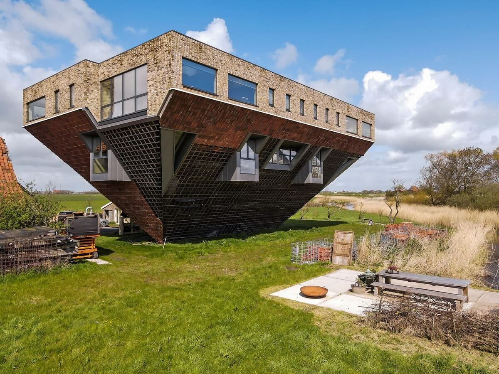
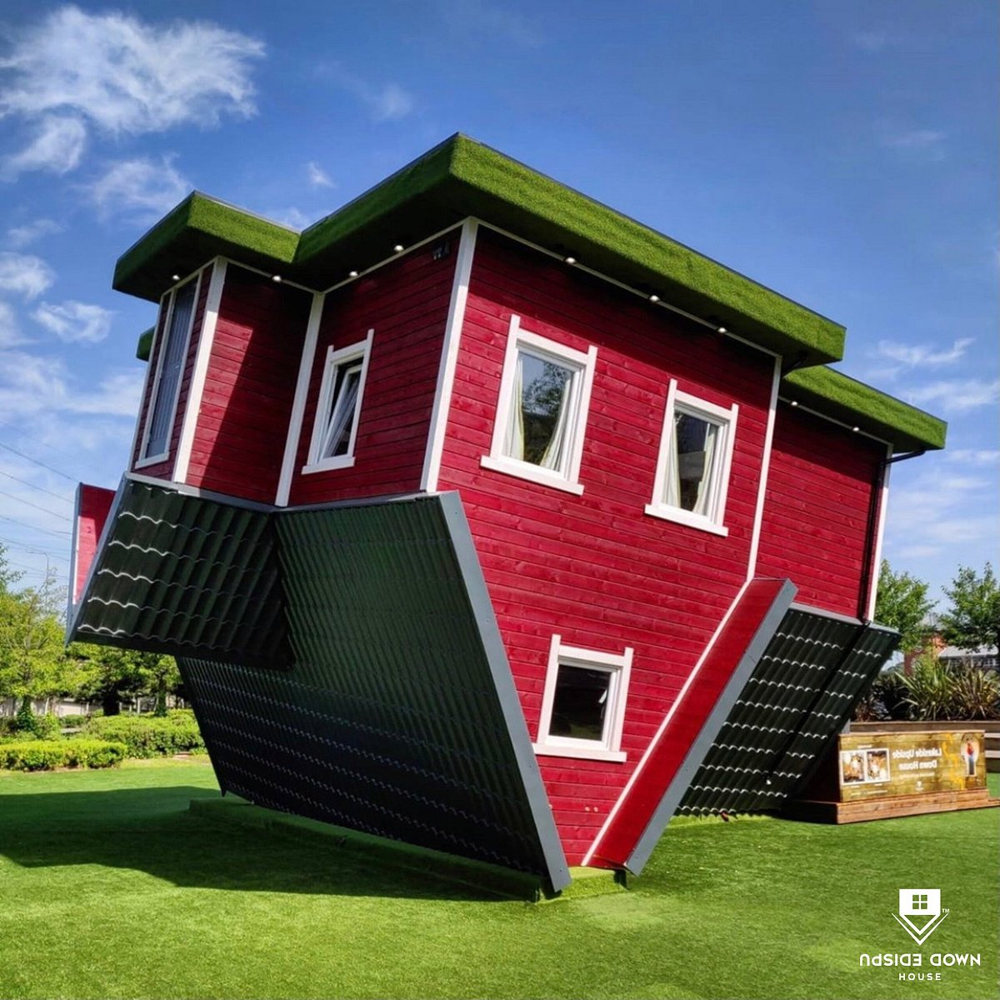
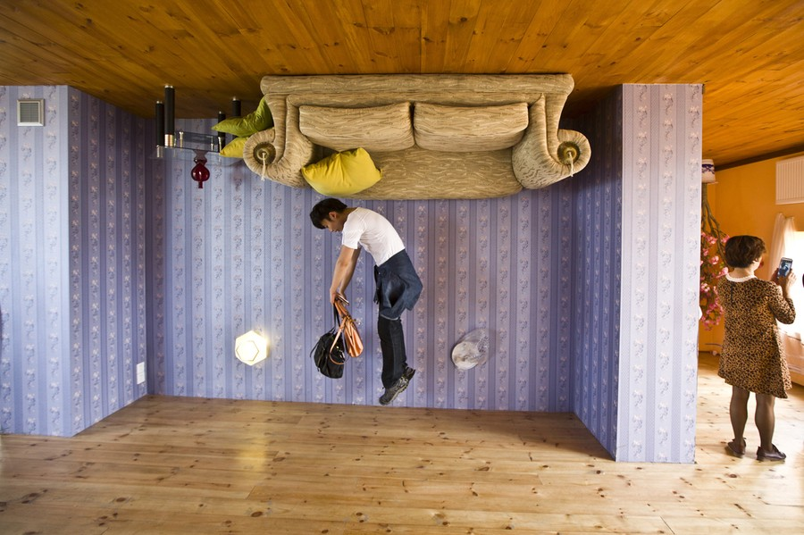

The Upside Down House
The Upside Down House is one of the most interesting and funny houses in the world. It looks like a normal home, but it is built completely upside down! The roof is on the ground, and the floor is in the air. When people see it for the first time, they are very surprised and start to smile or laugh.
Inside the house, everything is also upside down. The sofa, the bed, the chairs, the tables, the TV, and even the pictures on the wall are upside down. It feels strange when you walk inside because it looks like you are walking on the ceiling. Many people feel a little dizzy at first, but then they start to enjoy it.
The Upside Down House is a popular tourist place. People from many countries come to visit it. They like to take funny photos and share them on social media. Some people take photos where they look like they are standing on the ceiling or sitting on the roof! The pictures look amazing and make everyone laugh.
The idea of the Upside Down House is to make people happy and curious. It shows that art and architecture can be fun and creative. It also teaches us to see the world in a different way.
There are many Upside Down Houses in different countries, such as Poland, Germany, the United Kingdom, and Thailand. Each house has a different design and style, but all of them are very special.
Visiting the Upside Down House is a great experience. It is perfect for families, friends, and children. Everyone who visits it has a wonderful time and many funny memories.


